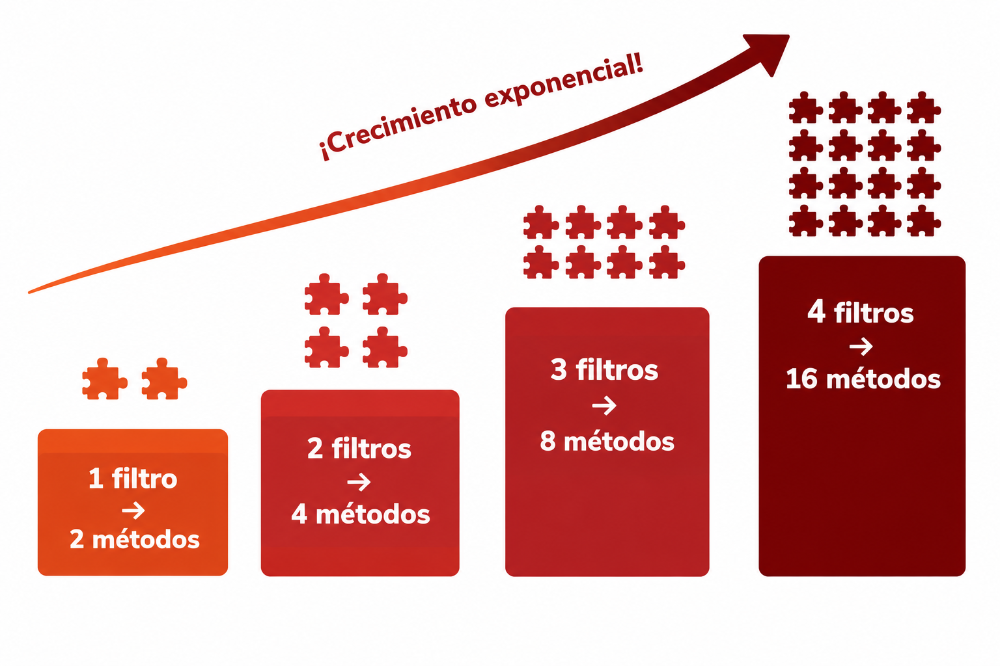
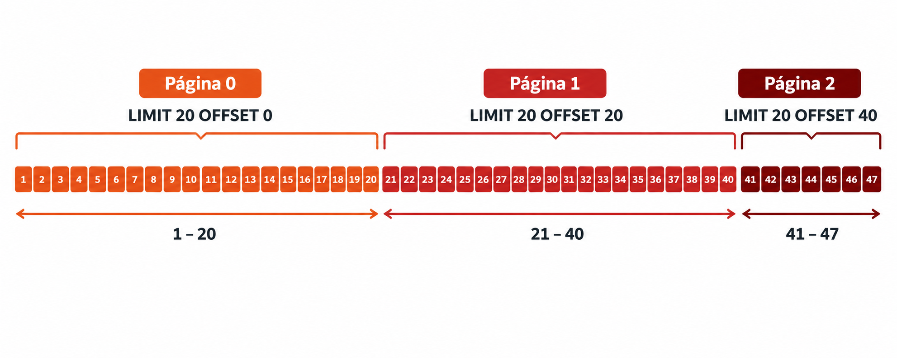

🧩 7. Consultas dinámicas: Specifications y paginación¶
Descarga de diapositivas
Ya sabes recuperar y modificar un objeto cuando conoces su id — findById() lo trae, cambias sus campos, save() lo guarda. Pero un listado real casi nunca busca por id: busca por criterios que el usuario elige, y además no puede devolver el catálogo entero de golpe. Este apartado resuelve dos problemas distintos, que además comparten el mismo listado como escenario — por eso, al final, verás cómo se combinan en una sola consulta:
flowchart LR
A["GET /libros?titulo=...&precioMin=...&page=0&size=20"] --> B["Specification<br/>(los filtros)"]
A --> C["Pageable<br/>(la página)"]
B --> D["libroRepository.findAll(spec, pageable)"]
C --> D
D --> E["Page<Libro><br/>contenido + metadatos"]Este diagrama es el destino final del apartado — pero llegarás a él en tres pasos: primero resuelves los filtros solos, luego la paginación sola, y al final las combinas. No hace falta entenderlo todavía; vuelve a mirarlo cuando llegues a la última sección.
¿Y el método QUERY?
Como has visto al estudiar HTTP, QUERY está pensado para consultas complejas con cuerpo, pero Spring MVC todavía no permite mapearlo directamente. Por eso, en este apartado los filtros llegarán mediante un GET con parámetros en la URL.
🔁 El punto de partida: buscar por un identificador¶
Hasta ahora has trabajado con operaciones en las que conoces el identificador exacto del objeto. Para recuperar o modificar un libro, el service utiliza findById(id), obtiene una entidad concreta y trabaja directamente con ella.
Eso funciona perfectamente cuando la petición se refiere a «el libro número 42». El problema cambia cuando el usuario no conoce ningún identificador y quiere buscar, por ejemplo, «libros de menos de 20 € publicados por una editorial concreta».
Ahí es donde findById deja de servir. En un listado real, el usuario no busca normalmente un objeto concreto: busca todos los que cumplan unos criterios determinados, sin saber ni necesitar conocer sus identificadores.
La primera idea que se te podría ocurrir es declarar un método derivado por nombre para cada filtro, como findByPrecioLessThan(BigDecimal precio). Y funciona bien mientras todos los usuarios busquen siempre por lo mismo. El problema real es que cada usuario puede querer una combinación distinta: uno busca solo por precio máximo, otro solo por título, otro por precio mínimo y máximo a la vez, otro por título y precio mínimo juntos... y no sabes de antemano cuál de esas combinaciones va a pedir cada uno.
🔍 Problema A: los filtros fijos no escalan¶
Y el problema no es solo teórico: en cuanto el buscador tiene varios filtros opcionales de verdad — título, precio mínimo, precio máximo, editorial — cubrir cada combinación con un método derivado distinto crece exponencialmente:
| Filtros opcionales | Métodos que necesitarías |
|---|---|
| 1 (solo título) | 2 — findAll() y findByTituloContaining(...) |
| 2 (+ precio mínimo) | 4 — incluyendo findByTituloContainingAndPrecioGreaterThanEqual(...) |
| 3 (+ precio máximo) | 8 — incluyendo findByTituloContainingAndPrecioGreaterThanEqualAndPrecioLessThanEqual(...) |
| 4 (+ editorial) | 16 — con nombres como findByTituloContainingAndPrecioGreaterThanEqualAndPrecioLessThanEqualAndEditorialId(...) |

Con solo 4 filtros ya tienes 16 combinaciones posibles, y cada filtro nuevo que añadas duplica ese número — sin contar con que un nombre de método así de largo deja de ser legible mucho antes de llegar a 16.
🧩 Las piezas nuevas, traducidas desde SQL¶
Antes de resolver el problema A, tres nombres que van a aparecer juntos y conviene no confundir. Ninguno es tan raro como parece — cada uno tiene su equivalente exacto en el SQL que ya conoces:
| Concepto Java | Su equivalente en SQL | Qué es en la práctica |
|---|---|---|
Root<Libro> |
FROM libro |
Representa la tabla que estás consultando; root.get("titulo") es literalmente "la columna titulo" |
CriteriaBuilder |
Los operadores de un WHERE (=, LIKE, >=...) |
Una caja de herramientas con un método por cada tipo de comparación — lo llamas como método Java en vez de escribirlo como texto SQL |
Predicate |
Una condición ya completa del WHERE |
Lo que construye el CriteriaBuilder, y lo que tu código debe devolver |
Con esto, una Specification<Libro> es, literalmente, una función con esta forma: recibe el root y el criteriaBuilder, y devuelve un Predicate — una única condición, construida con código Java en vez de escrita como texto.
✅ Resolviendo el problema A: Specifications, sin paginación todavía¶
Vas a construir la solución completa a este problema, de principio a fin, antes de complicarla con nada más.
1. Habilitar Specifications en el repositorio¶
| Java | |
|---|---|
JpaSpecificationExecutor añade la capacidad de ejecutar Specifications sobre este repositorio, junto al save/findById/findAll que ya tenías.
2. Tu primera Specification, condición por condición¶
Empieza por la parte que construye el Predicate, sin la parte del filtro opcional todavía:
| Java | |
|---|---|
Línea a línea, con la tabla de arriba delante: root.get("titulo") es la columna titulo; criteriaBuilder.lower(...) pasa esa columna a minúsculas antes de comparar (para que la búsqueda no distinga mayúsculas); criteriaBuilder.like(..., "%valor%") construye el Predicate — la condición LIKE '%valor%', pero escrita con métodos Java en vez de texto SQL. El tercer parámetro, query, no lo necesitas para filtros simples como este — está ahí porque la forma de la función lo exige, pero lo dejas sin usar.
3. El filtro es opcional: Specification.unrestricted()¶
Aquí es donde entra el problema de antes: este filtro puede no venir. Una Specification puede decidir, en tiempo de ejecución, si su condición entra o no en la consulta final — algo que un método derivado no podía hacer. Crea la clase LibroSpecifications, con un método estático por filtro:
Specification.unrestricted() es una Specification especial que ya trae Spring Data: su Predicate no impone ninguna condición real, así que al combinarla con las demás es como si no existiera. El patrón se repite en cada método:
| Si el filtro es... | La Specification devuelve... | Efecto en el WHERE |
|---|---|---|
null (el usuario no lo ha indicado) |
Specification.unrestricted() |
Ninguna condición añadida — se salta de verdad |
| Un valor real | El Predicate de arriba (LIKE para texto, greaterThanOrEqualTo para números...) |
Se añade al WHERE |
4. El DTO de filtro y el service — el listado completo, en List¶
| Java | |
|---|---|
Specification.where(...).and(...) encadena las piezas en una sola consulta final — las que son unrestricted() no añaden nada. libroRepository.findAll(spec) es el findAll de siempre, pero con una Specification como argumento: sigue devolviendo todos los libros que cumplan la condición, sin ningún límite de página todavía.
5. El controller¶
| Java | |
|---|---|
@ModelAttribute mapea automáticamente los parámetros de query string (?titulo=...&precioMin=...) a los campos del DTO. Con esto, el problema A está resuelto de verdad — pero si tu tabla tiene miles de filas, esta respuesta seguiría devolviéndolas todas de golpe. Ese es el problema B.
🔍 Problema B: tampoco puedes devolver todo de golpe¶
Ninguna API seria devuelve "todo" en una sola respuesta — si una tabla tiene un millón de filas, no tiene sentido (ni es viable) mandarlas todas de golpe. Este problema no tiene nada que ver con los filtros del problema A: pasaría igual aunque LibroController no tuviera ningún filtro, con un findAll() liso y llano.
✅ Resolviendo el problema B: paginación, sin filtros todavía¶
Es la misma idea que cuando buscas algo en Google: con miles de resultados posibles, no te enseña todos de golpe — te da los primeros 10 y un botón para pedir los siguientes. La paginación aplica exactamente esa idea a tu API: pides una página concreta, de un tamaño concreto, con un orden concreto, y el servidor te devuelve solo esa porción.
Con una tabla de 47 libros y páginas de 20 en 20, así quedaría trocearla:
| Página | Filas que contiene |
|---|---|
| 0 (la primera) | Filas 1 a 20 |
| 1 | Filas 21 a 40 |
| 2 (la última) | Filas 41 a 47 |

Fíjate en el número de la primera página: es 0, no 1 — Spring Data numera las páginas empezando desde cero, igual que un índice de array. Pedir la "página 1" te da la segunda página, no la primera; es un error habitual olvidarlo.
Spring Data modela todo esto con dos tipos:
| Tipo | Qué representa |
|---|---|
Pageable |
La petición: qué página, de qué tamaño, con qué orden — la construyes tú antes de consultar |
Page<T> |
La respuesta: el contenido de esa página, más metadatos (total de elementos, total de páginas...) |
Por debajo, sigue siendo SQL de toda la vida¶
Nada de esto es magia nueva: Hibernate traduce cada Pageable en las cláusulas LIMIT/OFFSET que ya conoces de SQL. Pedir la página 2 (la tercera) con tamaño 20 genera, por debajo, algo como:
| SQL | |
|---|---|
LIMIT 20 dice "tráeme como mucho 20 filas"; OFFSET 40 dice "sáltate las primeras 40" — las que ya salieron en las páginas 0 y 1. Spring Data calcula ese OFFSET por ti, multiplicando el número de página por el tamaño (2 × 20 = 40); tú solo indicas cuál página quieres.
Fíjate en que el parámetro Pageable pageable del controller no lleva ninguna anotación delante — a diferencia del @ModelAttribute LibroFiltroDTO filtro de antes. No hace falta: en cuanto Spring ve un parámetro de tipo Pageable en un método de un controller, busca automáticamente en la query string tres nombres muy concretos — page, size y sort — y construye el Pageable él solo, sin que tengas que declarar nada explícito para activarlo.
Lo que ve el cliente por HTTP
Con esos tres nombres reservados, una petición como esta ya te da un Pageable completo, sin escribir un solo @RequestParam:
| Text Only | |
|---|---|
Y la respuesta trae, además del contenido de esa página, todos los metadatos de Page — son más de los que parece a primera vista:
| Campo | Qué es |
|---|---|
content |
Los elementos de esta página |
totalElements |
Filas que cumplen la consulta en total, no solo las de esta página |
totalPages |
Páginas necesarias para recorrerlas todas (totalElements entre size, redondeado hacia arriba) |
number |
La página que estás viendo ahora mismo (empieza en 0) |
size |
El tamaño de página que has pedido |
numberOfElements |
Cuántos elementos trae esta página en concreto — distinto de size en la última página, si no llega a llenarla entera |
first / last |
Si esta es la primera o la última página — un atajo para no tener que comparar tú mismo number con 0 o con totalPages - 1 |
empty |
Si esta página en concreto no trae ningún elemento |
pageable |
La petición que ha generado esta página, devuelta tal cual: pageNumber/pageSize repiten number/size, y offset es el mismo cálculo que has visto con LIMIT/OFFSET |
sort |
Indica si se ha aplicado algún criterio de ordenación. En este ejemplo aparece como sorted: true porque la petición incluye sort=titulo,asc. Se muestra tanto en la página como dentro de pageable. |
En la práctica, solo un puñado de estos campos importa de verdad — content, totalElements, totalPages, number — el resto es información derivada de esos mismos datos, útil de vez en cuando pero no algo que vayas a leer en cada petición.
Si el campo de sort no existe, de momento da 500
Pide, por ejemplo, sort=noExiste,asc y la aplicación responde con un 500 Internal Server Error, no con un 400 — un error de entrada del cliente disfrazado de fallo del servidor. Se resolverá más adelante, en Programación de Servicios y Procesos, cuando gestiones las excepciones con GlobalExceptionHandler.
Igual que antes, la solución completa y aislada, sin ningún filtro de por medio — un findAll paginado sobre todo el catálogo. Ni siquiera hace falta JpaSpecificationExecutor para esto: findAll(Pageable) ya viene incluido en el JpaRepository de siempre.
| Java | |
|---|---|
| Java | |
|---|---|
@PageableDefault(size = 20) fija un tamaño de página por defecto si el cliente no especifica ninguno. Fíjate en que este getAll() ya no devuelve List, sino Page — ese cambio de forma en la respuesta es justo lo que vas a tener en cuenta al combinarlo con los filtros.
🧩 Todo junto: Specifications + paginación en el mismo listado¶
En tu proyecto real no vas a mantener tres endpoints separados (uno solo con filtros, otro solo paginado, y un tercero con todo) — vas a tener uno solo, que hace ambas cosas a la vez. Esto es lo que cambia respecto a las dos versiones aisladas de arriba:
| Pieza | Versión "solo Specifications" | Versión "solo paginación" | Versión combinada |
|---|---|---|---|
| Repositorio | JpaSpecificationExecutor |
Ninguno extra | JpaSpecificationExecutor (lo necesitas por los filtros) |
| Service, devuelve | List<LibroResponseDTO> |
Page<LibroResponseDTO> |
Page<LibroResponseDTO> |
| Service, recibe | LibroFiltroDTO filtro |
Pageable pageable |
LibroFiltroDTO filtro, Pageable pageable — los dos |
libroRepository.findAll(...) |
con spec |
con pageable |
con spec y pageable — existe ese findAll(Specification, Pageable) |
| Controller, parámetros | @ModelAttribute filtro |
@PageableDefault pageable |
Los dos a la vez |
Con esto, el service queda así — la misma Specification combinada de antes, más el Pageable que ya conoces:
Y el controller combina los dos parámetros en un único endpoint:
| Java | |
|---|---|
libroRepository.findAll(spec, pageable) es el findAll con los dos argumentos a la vez: aplica la Specification combinada (las piezas unrestricted() no añaden nada, así que sin ningún filtro es "todo el catálogo") y, de paso, trocea el resultado en la página pedida. Una sola llamada resuelve los dos problemas del apartado — exactamente lo que mostraba el diagrama del principio.
Para que Swagger UI lo documente bien: @ParameterObject¶
Si pruebas este endpoint desde Swagger UI, puede que el formulario no te muestre un campo por cada filtro y cada parámetro de paginación por separado — en su lugar, un único cuadro de texto con un JSON para filtro y otro para pageable. Pasa porque, por defecto, springdoc-openapi no siempre "explota" un objeto recibido por @ModelAttribute (ni siempre Pageable) en parámetros de query independientes — lo trata como un objeto más, casi como si fuera el cuerpo de un POST.
La solución es añadir @ParameterObject (de org.springdoc.core.annotations.ParameterObject) a los dos parámetros, junto a las anotaciones que ya tenían:
| Java | |
|---|---|
Con @ParameterObject, Swagger UI genera un campo de formulario por cada atributo (titulo, precioMin... y page, size, sort), en vez de un cuadro con JSON — que además, si lo rellenas a mano, no se traduce en la petición real que espera Spring: esa sigue siendo ?titulo=...&precioMin=..., no un JSON metido en un único parámetro de la URL.
✅ Ideas clave¶
Abrir resumen
findById+save()recuperan y modifican un objeto conocido por su id — no sirven cuando el usuario busca por criterios variables.- Problema A (los filtros no escalan) y problema B (no se puede devolver todo de golpe) son problemas distintos, que resultan compartir el mismo listado como escenario.
- Una Specification construye la consulta como piezas combinables en tiempo de ejecución;
Specification.unrestricted()es la pieza "vacía" que se usa cuando un filtro esnull. - La paginación trocea el resultado en páginas (tamaño, número, orden);
Pageablemodela la petición,Page<T>modela la respuesta (contenido + metadatos). Las páginas se numeran desde0, y por debajo se traduce enLIMIT/OFFSETde SQL de toda la vida. JpaSpecificationExecutorhabilita Specifications sobre un repositorio;findAll(spec),findAll(pageable)yfindAll(spec, pageable)son tres sobrecargas del mismo método, según qué problema (o los dos) necesites resolver.@ParameterObject(despringdoc-openapi) hace que Swagger UI muestre un campo por cada atributo defiltroy depageable, en vez de un único cuadro con JSON.